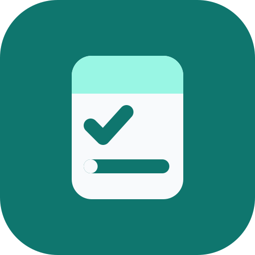

نوشتن ساده و آسان
تسک هام
امروز چه تسک هایی داری؟
هر چیزی که امروز باید انجام شود را همینجا بنویس و با خیال راحت جلو برو.
تسک فعال
۰
ظرفیت باقیمانده
۵
در حال انجام
۰
اولویت بالا
۰
تسک جدید
۰ / ۵۰
تسک هام
لیستت هنوز خالیه
هر کاری که نمیخواهی از یادت برود را همینجا بنویس.